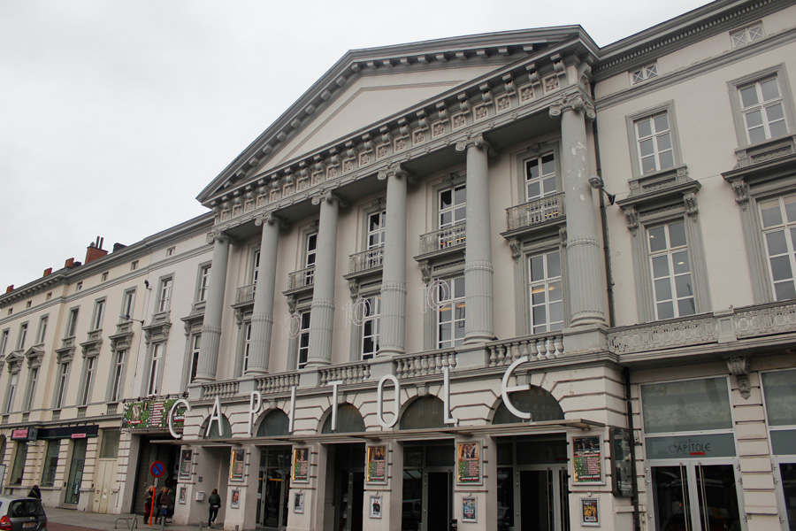
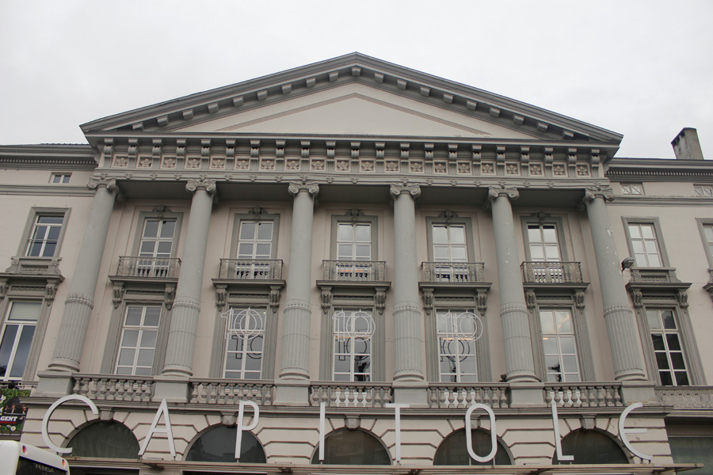

- 
- 

De Capitole, één van de meest gekende cultuurspots, is een gerenommeerd theater in Gent, België. Het is een prachtig gebouw in de art deco stijl dat zich bevindt op het Zuid. Op deze site kan je alles terugvinden over de geschiedenis van het gebouw, de evenementen en kan je zoeken hoe je er geraakt.
In deze dagen van crisis let iedereen op zijn uitgaven en kan er zelfs geen enkele euro apart gezet worden voor een spektakel van de hoogste plank. Daarom willen we met deze site mensen aanmoedigen zich niet schuldig te voelen om te genieten van onze rijke cultuur. Blijf genieten van de prachtige voorstellingen en van het leven!